Localization in Simulation
The figure below depicts the navigation and localization outcomes within the simulator. Trajectories are represented by red, green, and blue lines corresponding to the odometry (odom), ground truth, and Bayes filter belief, respectively. It is evident from the visualization that the trajectories produced by the Bayes filter closely approximate the ground truth trajectory, indicating the effectiveness of the filtering approach in localizing the robot accurately.
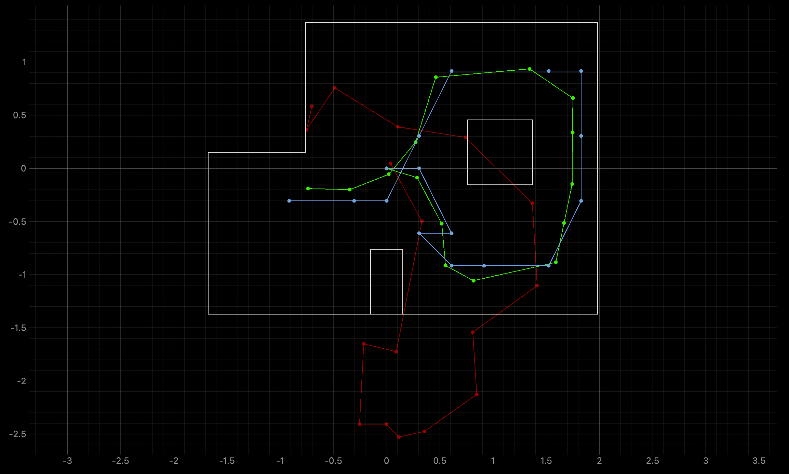Perform Observation Loop
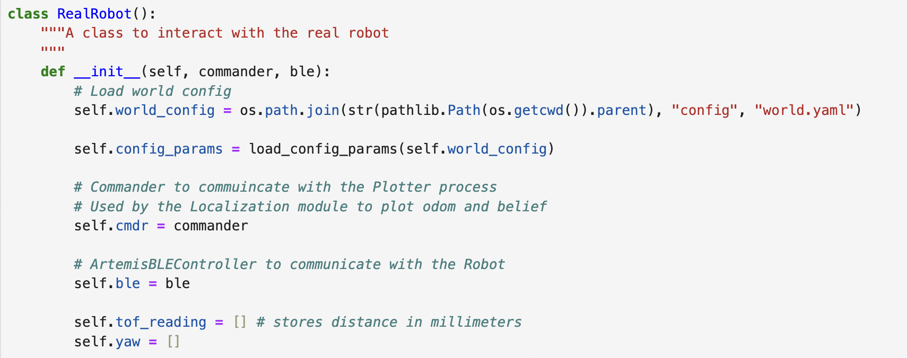 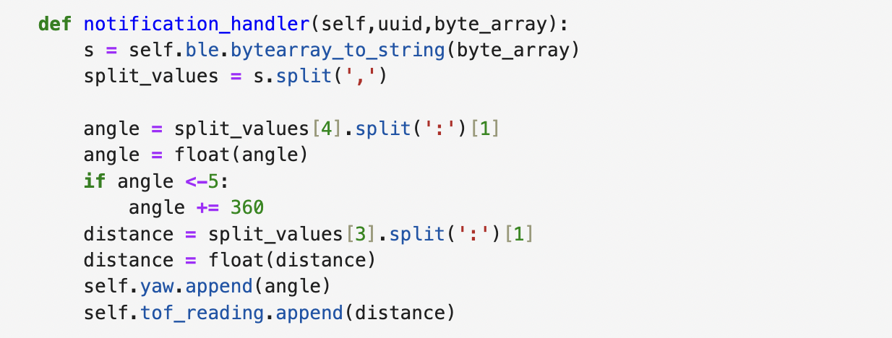 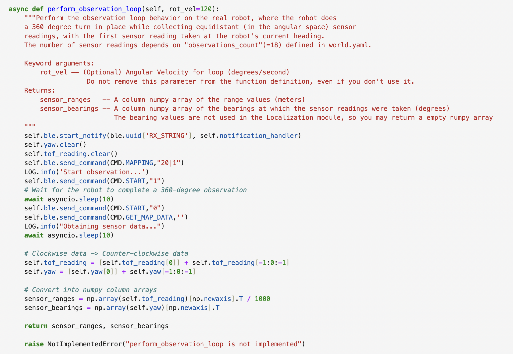I used the following four marked arena locations from Lab 9 as known poses and ran the update step at each of them:
- (-3, -2) ft
- (5, 3) ft
- (5, -3) ft
- (0, 3) ft
Result
Below are the results for each marked location. In each plot, the green dot represents the ground truth, which was manually added in Python for each placement of the car. The blue dot indicates the belief state after the Bayes update step. These visualizations provide a comparison between the estimated position generated by the Bayes filter and the actual position of the robot as determined by ground truth data.
Marked Point at(-3,-2)
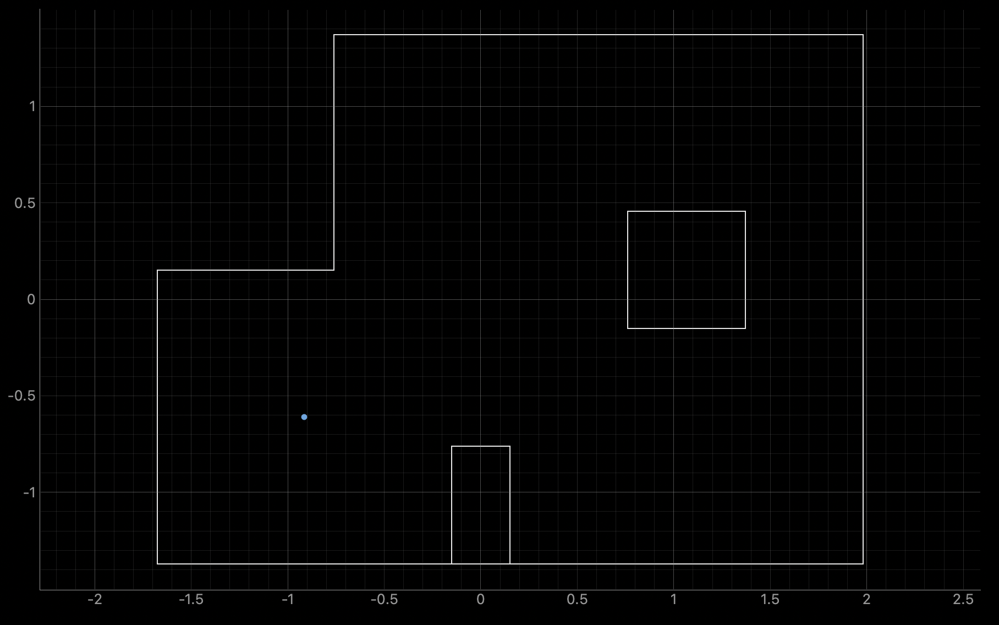 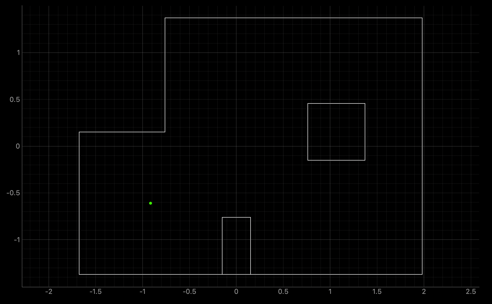 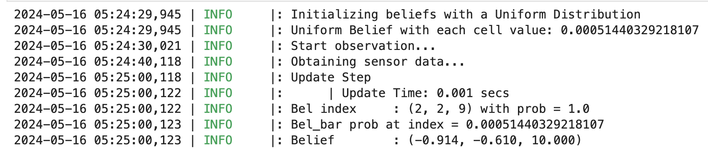The localization at this point gives very accurate result. The blue point and green point nearly overlaps with each other.
Marked Point at(5,3)
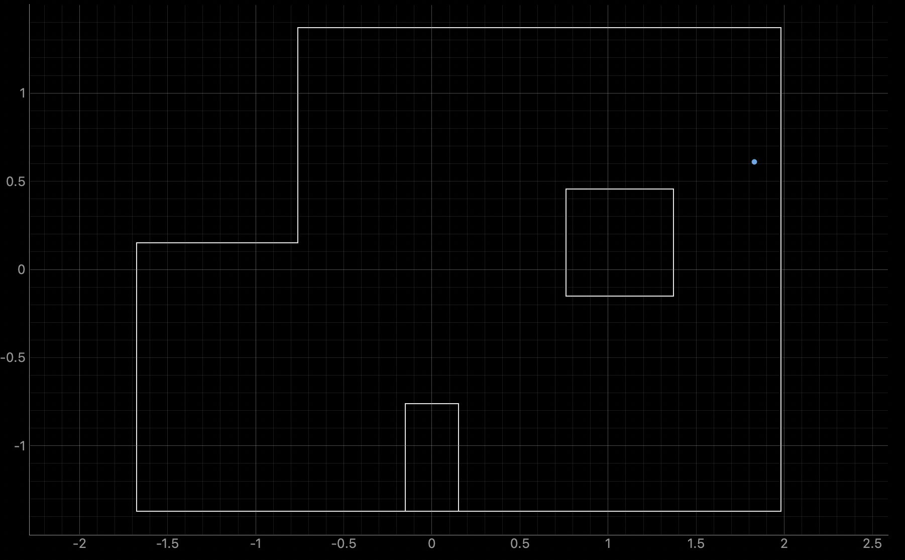 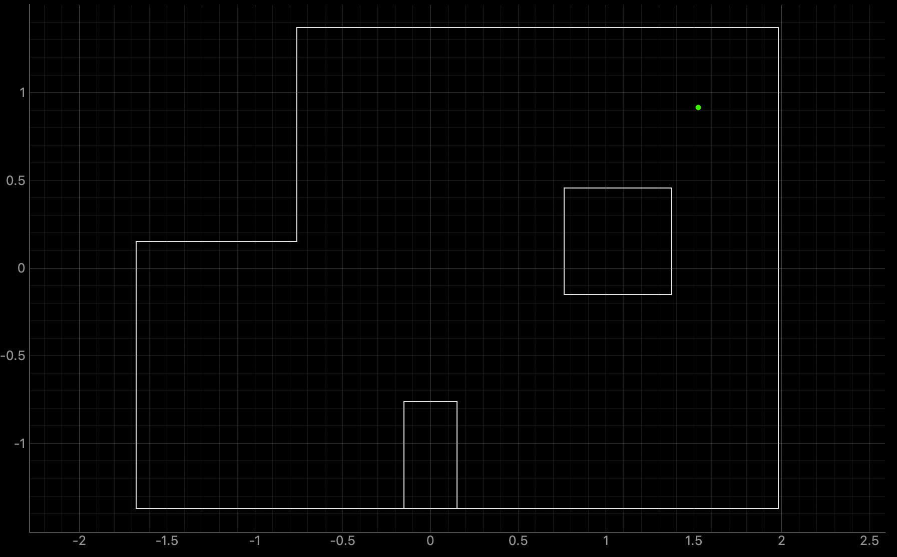 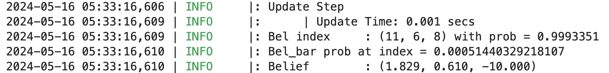The discrepancy in localization accuracy at this particular marked point is likely attributed to the inaccurate data collected during that instance. This deviation is primarily caused by a significant fluctuation in the Time-of-Flight (ToF) sensor readings, which abruptly shifted from approximately 3000 to 500 and subsequently reverted to 3000 due to the presence of an obstruction, presumably the box in the middle. Such fluctuations can considerably impact the reliability of the localization process, leading to a noticeable deviation between the estimated belief and the actual ground truth position.
Marked Point at(5,-3)
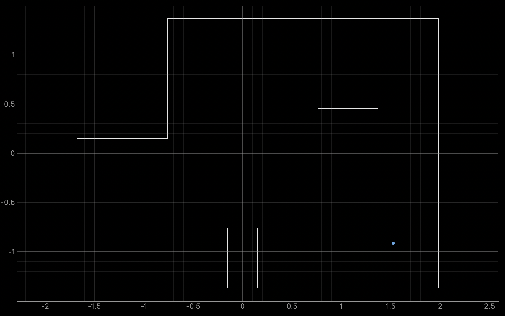 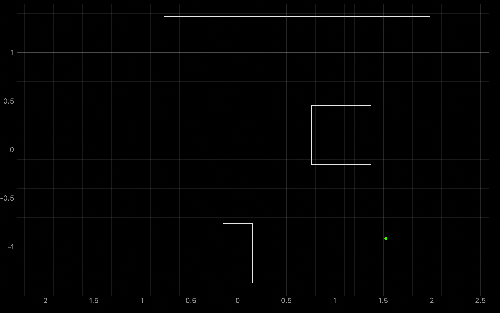 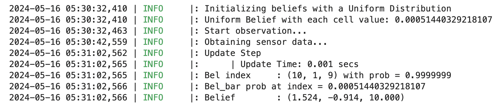The localization at this point gives very accurate result. The blue point and green point nearly overlaps with each other.
Marked Point at(0,3)
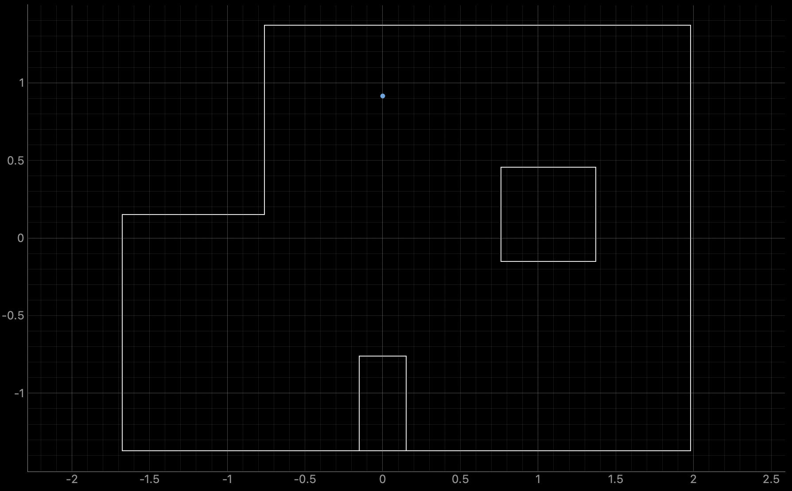 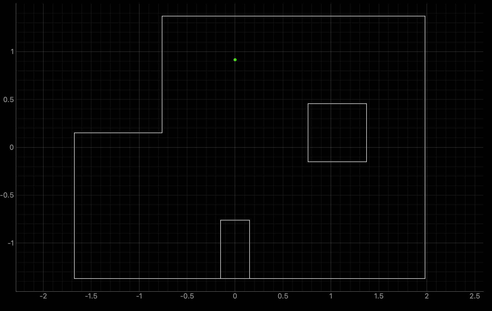 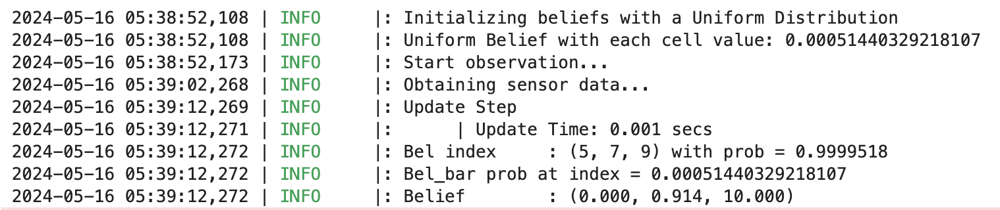The localization at this point gives very accurate result. The blue point and green point nearly overlaps with each other.
Conclusion
It's immensely gratifying to witness the culmination of our efforts in this lab, which serves as a pivotal milestone in integrating various systems and principles we've been diligently working on throughout the semester. These promising results underscore the effectiveness of our localization process, laying a solid foundation for our final lab endeavor. As we prepare to leverage localization for planning and executing a path through the arena in our upcoming lab, the success observed here instills confidence and serves as a testament to our progress and dedication. With our collective efforts and the insights gained from this lab, I'm optimistic about achieving further success in our final endeavor.